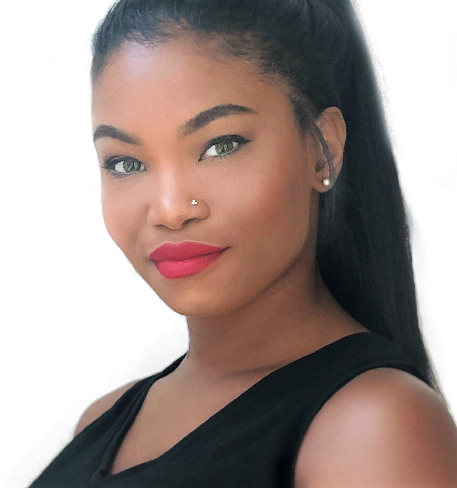

Hey there

I'm Erica!
I am a software developer based in Washington, D.C.
Contact Me!
As a former artist I absolutely love:
- Developing and designing eye-catching websites that make a colorful splash!
- Writing top-notch code that paints a clear and organized application.
- Developing user friendly software alongside a team of passionate developers.
Check out my site:
- Learn about me
- Contact me for more information
About Me
My interest in web development came to me one day when I accidentally discovered developer tools in my Chrome browser. I realized that I could communicate with my computer by simply inputing a simple line of text.
- As a creative I have always been passionate about building and designing content so when I learned that I could make a career out of doing what I love, I started learning computer programming and haven't looked back.
- As a team-builder I enjoy the support and value of working with a team of passionate developers.
- As a data science major/ cybersecurity minor at University of Maryland and a Treehouse Full Stack graduate, I am refining my journey to becoming a more advanced software developer and couldn't be happier!
When I am not conjuring up code I enjoy traveling to different cities and countries. To be completey honest, I am pretty sure it is my love for food (well, eating it) that excites me most about visiting new places.
If you're looking to hire a new developer (or are looking for a partner for a hackathon) please reach out! I am so excited to work with other developers to build great software.